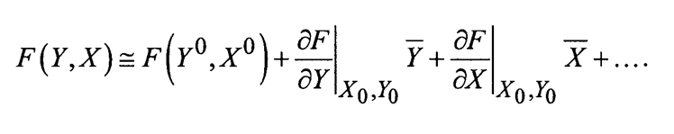
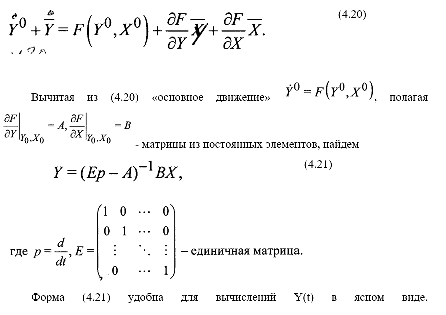

Вопрос 21: В чём состоит задача упрощения ММ КФС?
Для реализации математической модели метауровня (метомодели) на практике необходимо произвести ее упрощение, естественно, при этом не потерять сути. Проектировщики работают с упрощёнными моделями, поскольку полные модели чрезвычайно сложно обозревать, трудно обрабатывать и т.д.
Пример неупрощённой системы: (1)
где - вещественная вектор - функция своих аргументов;
- вектор искомых фазовых координат системы.
- случайные функции времени. Y включает углы тангажа, крена, курса, поворота рулей и т. д
- вектор параметров системы (параметрами являются массы, моменты инерции и т.д.)
- вектор возмущающих воздействий - случайных функций времени.
Начальные условия случайные велечины.
Если , то система ОСДУ становится трудноразрешимой задачей на ЭВМ. Для реализации такой ММ на практике необходимо произвести ее упрощения, естественно, при этом не потерять сути.
Упрощение ОСДУ
Суть кратко: от дифферинциальных уравнений в частных производных перейти к обыкновынным полным, потом к упрощённым уравнениям. Некоторые параметры несущественны.
- Избавимся от массива начальных условий (н. у.) путем замены переменных:
...
тогда при получим н.у. по :
...
Переходим от системы (1) к системе уравнений:
(2)
где - расширенный вектор параметров,
- Избавимся от случайных процессов заменой переменных
(3)
где - случайные величины.
Представление (3) выше основано на известных разложениях случайного процесса на сумму известных функций с параметрами случайными величинами. С помощью замены (3) вместо системы (2) получаем
где - новый расширенный вектор параметров.
Таким образом случайные процессы заменены на случайные величины. Случайные величины на ЭВМ воспроизводятся известными генераторами случайных величин.

Применив разложения в ряд Тэйлора, найдем:
Например, если траектория движения просчитана, то известны и можно составить уравнение в малых отклонениях от основного движения:

-